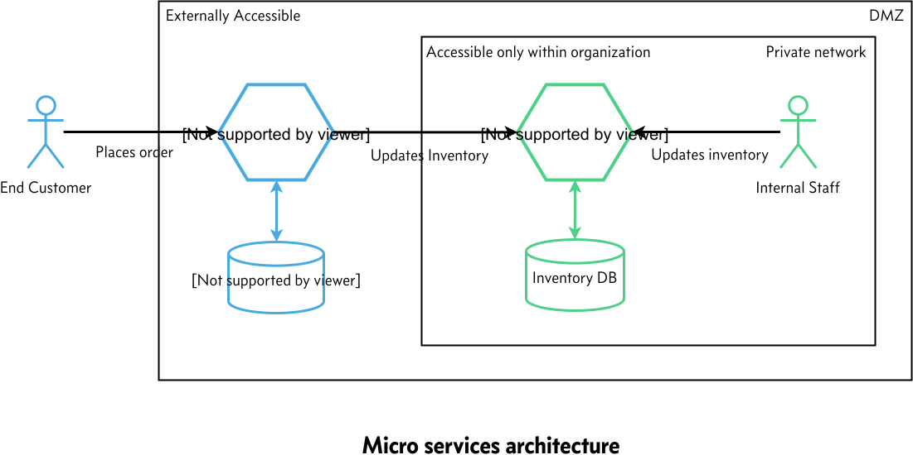
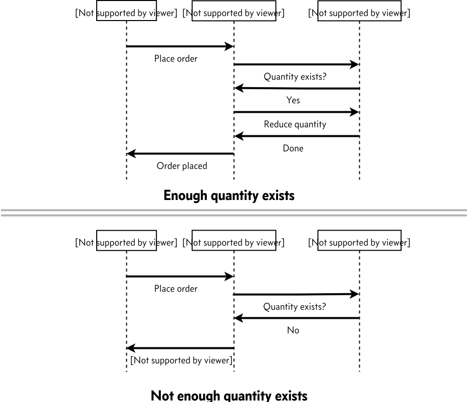
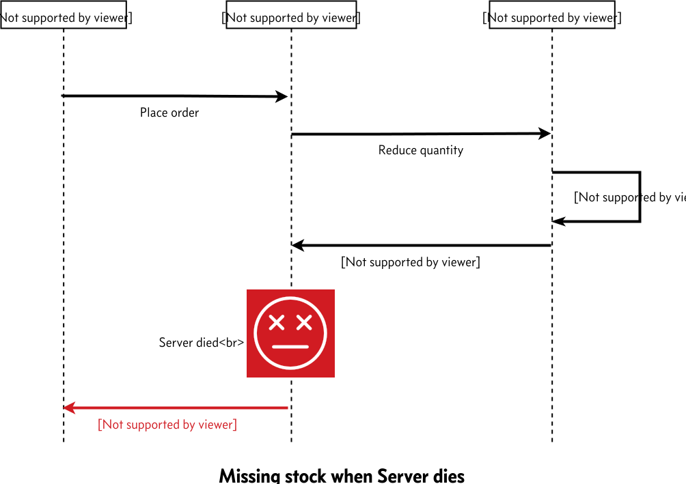
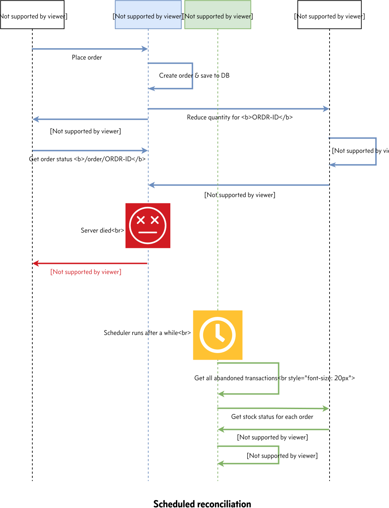

Consistency thru compensation in micro services
Posted under Micro Services on

This article addresses the eventual consistency aspect of transactions in micro services environment where a transaction spans more than one micro service & transaction failure midway is imminent
Existing business usecase
Suppose that we currently have a monolithic order management system that is backed by a RDBMS
Business requirements
Our business expects us to give them the following guarantees
- Never accept an order if the inventory does not have enough stock
- Every item in the inventory is either assigned to an order (or) available for further purchases by customer within a reasonable amount of time
As every seasoned developer knows, Monolith is a heaven for systems that want consistency because of RDBMS & the ACID guarantees it provides. But this comes at the cost of autonomy & scalability
Because of ACID guarantees, when we update both order & inventory tables, either the transaction succeeds (or) fails atomically. Because of this, it is easy to ensure
Total inventory = Amount of stock left in inventory + quantity used up by previous orders
In essence, its relatively easy to fulfill this requirement in our monolithic world since we will be working against a single database
Please note that most of the businesses will be OK if we oversell items even when we don’t have corresponding stock in the inventory. This is because once the order is placed, the business can ask vendors to send it more stock of the oversold items & still fulfill our customer’s order. The point this article addresses is “can the technology live within business constraints”?. Suppose our business does not permit overselling because we are selling rare items, say classic paintings/some other exclusive items, which means we cant oversell as no other vendor can supply additional stock of all items in our inventory
Breaking monolith
Suppose we chose micro services for achieving autonomy in terms of scalability/development velocity/release schedule, e.t.c, it follows that we can’t share a single database across all of these micro services. Sharing database across micro services forces each team to coordinate with other team as soon as database schema needs to change, which defeats the whole purpose of micro services
Each type of micro service (can have any number of instances) will have to have its own private datastore. In other words, multiple instances of the same service type share a single database, but this database is never shared across micro services
After we identified our bounded contexts, we came up with the following breakup of our monolith into two micro services namely
order-servicewhose responsibility it is to accept customer ordersinventory-servicewhose responsibility it is to allow changes to inventory by both order service & also by our own internal inventory team

At first glance, fulfilling this business requirements in micro services does not look that hard
We can make order-service call to inventory-service to check if sufficient stock exists to fulfil the order. If stock is available, reduce the given quantity of stock & permit the order to go thru. If not, deny the order

But any seasoned developer will tell you it is not that simple (and I would not have written this article if it was this simple)
Problem with concurrent transactions
Suppose two different users try purchasing the same item simultaneously when not enough stock exists to fulfill both the orders. If proper care is not taken at inventory-service level, we might allow both orders to succeed, even tho we don’t have enough stock to fulfill both

As any one who is familiar with concurrency control will tell us, why doesn’t inventory-service reject the second request by utilizing optimistic concurrency control (or) pessimistic concurrency control
Once we apply this fix, if two users attempt simultaneous purchase only one of them would succeed if fulfilling both orders results in stock becoming negative

Problem with server failures
Even with the above solution, we are still left with a problem
When it comes to servers on which our application runs, no one can guarantee that the hardware never fails. So server failure is a given. Every application must keep this in mind & should be resilient to these failures
What if inventory-service reduced the quantity in its database & order-service dies before it commits to its database?

Now we are left with an interesting situation where we have missing inventory from the system because the server crashed. Welcome to DATA INCONSISTENCY
Going back to drawing board
Now we know business will be really unhappy because even though we have unsold physical inventory, its missing in the software because one of our server crashed in the middle of the transaction
There are multiple ways this problem can be addressed. In this article I will present one way of addressing this
In the previous approach, order will be either in confirmed/rejected state & the client is stateless
But in our new approach
- Order will have three states namely
initialized,confirmed&rejected - And our client would be Stateful
- In addition, the client will follow Redirect after POST pattern
The reason for this redirect is because when client encounters a failure like the one in previous scenario, we don’t want the client to retry the operation & place multiple orders for the same cart because user refreshed his browser. The previous pattern avoids this situation completely
Given that, here is our new approach
- As soon as a request is received,
order-servicesaves an order with statusinitializedto its own db - Immediately,
order-servicewill make call toinventory-servicewith the<order id>and additional item info to reduce the stock in a background thread with an exclusive row level lock on the newly created order order-serviceresponds to the client with HTTP202 Accepted(if API based client)/302 Found(if browser) response with a link to check the status of the order thru httpLocationheader- If background order placement succeeds,
order-servicewill update the status of the order toconfirmed& releases row level lock on the order - If not,
order-servicewill update the status of the order torejected& releases row level lock on the order - Once client sees above
202/302response, it will redirect the user to order status page (incase of browser) so that browser refreshes does not cause duplicate orders. Its a best practice to show loading screen while the order is being processed - Finally,
order-servicewould respond to the order status request withinitialized/confirmed/rejectedstatus - If the order is not yet concluded, latest status can be obtained by client using polling/server can implement long polling to avoid client putting too much polling load
From point (2) of the mechanism above, in normal flow, order-service takes an exclusive row level lock over the order row and releases only once the transaction is concluded
If server crashes in the middle, this lock on that order row would be be released immediately by database
We will use this aspect to make sure that we dont interfere with the transactions that are currently in progress, when we try to reconcile/compensate (will be discussed later)
Now back to the crash issue in order-service
Since crash leaves our data in inconsistent state, order-service will have to explicitly reconcile/compensate for these failures at the application level by fetching the latest status of the order from inventory-service for abandoned orders. This is why its called Compensating Transaction
Compensation guarantees order status to be consistent with the business rules EVENTUALLY, but not immediately
Depending on how soon we want this reconciliation, we can implement reconciliation in the following three stages
- Startup reconciliation: Orders abandoned before the instance is started are guaranteed to be consistent once the instance is up (optional)
- On demand reconciliation: Orders requested by client are guaranteed to be consistent once the request is processed successfully (optional)
- Scheduled reconciliation: Orders that are abandoned before the scheduler ran are guaranteed to be consistent once scheduler runs successfully (mandatory)
The guarantees each of the above three reconcilers provides are only valid for those orders for which the reconciler can acquire exclusive lock. If some other instance’s reconciler is doing compensation for any given order, the current reconciler just skips over them
Now lets look at each one of these options & how the reconcilation/compensation works
Startup reconciliation
This type of reconciliation guarantees that all the orders that were abandoned before the startup of the instance are guaranteed to be consistent once application is up
Suppose that order-service crashed in the middle of a transaction (abandoned). Instance can be brought back online manually/using kubernetes/some other mechanism
Here is what we should do as part of order-service startup to meet above guarantee
order-servicehave to check if there are any orders ininitializedstate- Attempt to acquire exclusive row level lock on each of the above orders. If lock cannot be acquired, just skip over it as this order is current being processed by some other instance
- For each of the above order on which lock can be acquired,
order-servicewill requestinventory-serviceabout the latest status of the stock consumed by the given<order id> inventory-servicewill return latest status, whichorder-servicewill use to update in its own database & release exclusive row level lock
This way, order-service guarantees all orders that were abandoned before the startup will be consistent after startup

On demand reconciliation
Implementing this gives a guarantee that any abandoned order/transaction will be reconciled on the subsequent status request for that given order. Note that this only reconciles one specific order, not all abandoned orders
The way this works is, as soon as we receive a request for order status
order-servicewill get the status of the order from local db- If status is
initialized, attempt to acquire exclusive row level lock - If row level lock cannot be acquired (some other instance is working on this), then wait till exclusive row level lock can be acquired on the order
- Once lock is acquired, check if status is still
initialized. If true, move to step (5), else return latest status order-servicewill requestinventory-serviceabout the latest status of the stock consumed by the given<order id>inventory-servicewill return latest status, whichorder-servicewill use to update in its own database & release exclusive row level lock
Suppose that we have two instances of order-service & the 1st instance is handling the order request & the server crashed midway just like before. When the client resends order status request (clients are expected to do this on a best effort basis), it will be received by the second instance, at which point, we can do compensation logic for the abandoned order as part of this request. This way client does not have to wait till the scheduled reconciliation to get the latest status (next section)

Scheduled reconciliation
This type of reconciliation guarantees that all the orders that were abandoned before the start of the current run of scheduler are guaranteed to be consistent once scheduler run is complete
Since relying on client to reconcile all orders that failed midway is not a good idea as the client might never be able to contact the server due to network issue or some other reason, we want a mechanism within the application itself that does auto reconciliation at regular interval. This is where scheduled reconciliation comes in
At regular interval we have to schedule a task to be run within our application that does the reconciliation
For each run of the scheduled task, this is what the reconciler does
order-servicewill fetch all orders that are ininitializedstate- Attempt to acquire exclusive row level lock on each of the above orders. If lock cannot be acquired, just skip over it as this order is current being processed by some other instance
- For each of the above order on which lock can be acquired,
order-servicewill requestinventory-serviceabout the latest status of the stock consumed by the given<order id> inventory-servicewill return latest status, whichorder-servicewill use to update in its own database & release exclusive row level lock

Conclusion
We looked at one approach by which we can achieve resiliency in our application even under server crashes & any intermediate failures
In order to achieve that, we needed
- Stateful client
- Compensating transactions/Reconcilers at various levels
We looked at three types of reconciliations
- Startup reconciliation
- On demand reconciliation
- Scheduled reconciliation
It is important to note that each application must have Scheduled reconciler as this guarantees regular reconciliation & is not dependent on external actors. The other two types of reconciliations are optional but preferred
In a typical application, you would have all three reconcilers to reduce the amount of time the system will be in inconsistent state in case of unexpected failures
If you have any queries/suggestions let me know in the comments section
Comments